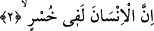

ederim.” (Duhâ, 93/1-2)
et-Te’vîlâtü’n-Necmiyye’de bu âyetle ilgili olmak üzere şu ifâdeler yer alıyor: “Allah
Teâlâ zamanın devâmı ve sürüp gitmesinin kemâli üzerine yemîn ediyor. Çünkü o zaman
Rasûlullah (s.a.) Efendimiz’in velâyet, nübüvvet, risâlet ve hilâfetini ihtivâ ediyor. Zîrâ
Allah Rasûlü (s.a.) şöyle buyurmuşlardır: “Âdem su ile çamur arasında iken ben nebî
idim.” [212] Yâni ilim suyu ile malûm çamuru arasında iken. Yine Efendimiz (s.a.) şöyle
buyururlar: “Biz sonrakiler ve öncekileriz.” [213] Yine Allah -sübhânehû ve Teâlâ-’dan
naklen şöyle denir: “Sen olmasaydın ben felekleri (kâinâtı) yaratmazdım.” [214] Yine
şöyle denir: “Ben Allah’tanım, mü’minler ise bendendirler.” [215] Bütün bu hadisleri
Allah Teâlâ’nın, “Biz seni ancak âlemlere rahmet olarak gönderdik” (Enbiya,
21/107) âyeti de destekler. Burada yer alan “âlemler”den maksad; O’nun zamanındaki
âlemler, O’ndan önceki ve sonraki zamanlardaki âlemlerdir. Çünkü “âlemîn” kelimesi
“el” takısı ile mahallî çoğul olmuştur. Bu sebeple de umûm ve şümûl ifâde eder.
2. İnsan gerçekten ziyan içindedir.
Bu âyette yer alan “insân” kelimesinin başındaki “el” takısı cins içindir. Yâni burada
yer alan “insân” kelimesinden maksad bütün insan cinsi demektir. Çünkü “insân”
kelimesinden istisnâ yapılabilir. Herhangi bir kelimeden istisnâ yapılabilmesi, o
kelimenin genel anlamlı ve tüm fertleri kuşatıcı olması demektir.
“Ziyândadır” anlamında âyette “husr” kelimesi kullanılmaktadır. Husr ve husrân
Aparça’da eksiklik ve ana paranın elden gitmesi demektir. İnsanın sermâyesi ise,
kendisi ve ömrüdür. “Husr” kelimesinin nekre getirilmesi husrânın büyüklüğünü ifâde
etmek içindir. Buna göre âyette denmiş oluyor ki: İnsan, ticâretinde ve ömrünü azgınlık
yollarında harcamasında öyle büyük bir hüsrandadır ki onun hakîkatini ancak Allah
Teâlâ bilir.
Kalıcı olmayan matluplara sarf edilen ömürler elbette zarardadır.
Aziz ömrünü boş yere sarf edip zâyi etme!
Sonra zarar edersin de sana hiçbir faydası olmaz.
Burada günâhın, büyük olduğu ifâde edilmiştir. Bunun iki sebebi vardır: Ya hakkında
günâh işlenen zât büyük olduğundan günâh da büyük olur veya o günah büyük bir nîmete
karşı işlenmiştir. Kulun Rabbine karşı işlediği günahlarda her iki yön de mevcûttur. Şu
hâlde böyle bir günah hiç şüphesiz son derece büyük olacaktır.
Veya “Husr” kelimesinin sonundaki tenvin, “tenvi‘/çeşitlendirme” içindir. Yâni
insanoğlu, insanların bilmediği bir çeşit hüsrân içindedir.